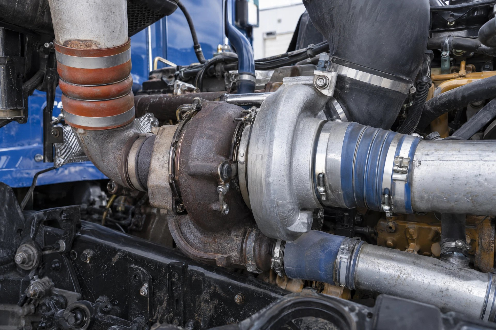

Turbo & charge air: Illustrative system photography—not a location, fitment, or repair-procedure reference.
💨 TURBO & CHARGE AIR DIAGNOSTICS
Turbo & charge air: how the pieces connect
The engine needs a clear, sealed intake-air path.
- 1
Air inlet + turbo
The compressor raises intake-air pressure.
- 2
Charge-air cooler + piping
Cool and carry the compressed air to the engine.
- 3
Engine + control
Air delivery must match operating demand and control commands.
Low power is not automatically a failed turbo. Save faults and distinguish low boost, leaks, noise and actuator complaints.
Which symptom matches your truck?
Low BoostOpen the focused symptom guide.OverboostOpen the focused symptom guide.Boost LeakOpen the focused symptom guide.Whistle / HissOpen the focused symptom guide.VGT / ActuatorOpen the focused symptom guide.Oil in Charge AirOpen the focused symptom guide.Low PowerOpen the focused symptom guide.Excessive SmokeOpen the focused symptom guide.DerateOpen the focused symptom guide.
See how all truck systems connectFind manufacturer service information
Boost is the result of an entire air-and-exhaust system. Diagnose the path before buying the turbo.
📉 Low Boost📈 Overboost💨 Boost Leak🎵 Whistle / Hiss🎛️ VGT / Actuator🛢️ Oil in Charge Air🐌 Low Power🌫️ Excessive Smoke🐢 Derate⚠️ Boost / Air Code
1️⃣ AIR FILTER / INLET
Air must enter without excessive restriction or collapsing plumbing
Air must enter without excessive restriction or collapsing plumbing
↓
2️⃣ TURBO + CONTROL
Exhaust energy, hardware and control must create the requested compressor response
Exhaust energy, hardware and control must create the requested compressor response
↓
3️⃣ CHARGE-AIR COOLER
Must cool air while containing pressure
Must cool air while containing pressure
↓
4️⃣ BOOTS / PIPES / CLAMPS
The complete pressurized path must stay sealed
The complete pressurized path must stay sealed
↓
5️⃣ INTAKE / ENGINE + EXHAUST
Airflow, combustion and exhaust energy interact with boost control
Airflow, combustion and exhaust energy interact with boost control
👇 Follow the complaint
📉 LOW BOOST: Save faults, check derate status, inlet restriction and charge-air leakage. Compare command/expected operation to actual before condemning turbo hardware.
📈 OVERBOOST: Verify pressure information first, then compare control command and actual response. Binding mechanisms, actuator/control faults and related exhaust/EGR conditions may matter.
💨 BOOST LEAK: Inspect the entire compressor-to-intake path and use the approved pressure/leak test. Do not overlook a pre-turbo exhaust leak that reduces turbine energy.
🎵 WHISTLE / HISS: Noise can come from charge air, exhaust, inlet plumbing or turbo hardware. Locate it instead of diagnosing by sound alone.
🎛️ VGT / ACTUATOR: Separate actuator electronics/control from turbo mechanism movement. Use command-versus-position data and required calibration/setup procedures.
🛢️ OIL IN CHARGE AIR: Residue alone does not prove turbo failure. Quantify it, check actual oil consumption and consider crankcase/breather and engine conditions.
🌫️ BLACK SMOKE / LOW POWER: Insufficient air is one branch. If air and boost are proven healthy, continue into fuel and mechanical engine diagnosis.
🧠 Turbo replacement firewall
1️⃣ Can clean air reach the compressor?
2️⃣ Can compressed air stay inside the charge-air system?
3️⃣ Is sufficient exhaust energy reaching the turbine?
4️⃣ Is the engine requesting the boost you expect?
5️⃣ Does the actuator/control system respond correctly?
6️⃣ Which approved inspection proves the turbo hardware itself failed?
🧩 Related systems
FAULTS / DERATE → INLET → CHARGE-AIR CONTAINMENT → EXHAUST ENERGY → COMMAND VS ACTUAL → CONTROL / ACTUATOR → TURBO HARDWARE WHEN PROVEN → VERIFY.
⚠️ Turbochargers, exhaust components and charge-air plumbing can be extremely hot. Keep clear of rotating components and use current manufacturer procedures, inspection limits and leak-test pressures.